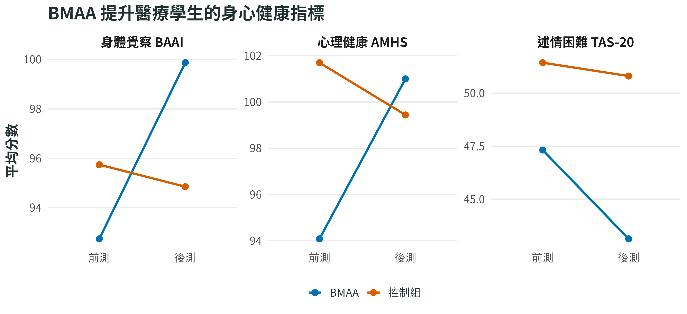
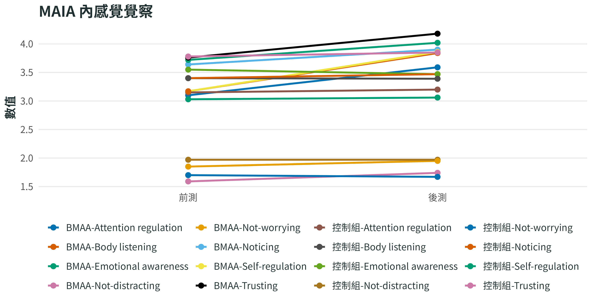

From body to mind: how body-mind axial awareness training enhances body awareness, mindfulness, positive embodiment and mental health in healthcare students
BMAA
研究摘要
From body to mind: BMAA enhances body awareness, mindfulness, positive embodiment and mental health
方法
- 實驗設計：非隨機前後測控制組設計，並以 ANCOVA 控制前測差異。
- 實驗組（BMAA，38 人） vs 控制組（27 人）；參與者為醫療相關科系學生。
- 介入：8 週 BMAA，每週 2 小時，搭配每日居家練習與每週反思。
- 主要依變項：身體覺察（BAAI、MAIA）、正念覺察（MAAS）、正向具身經驗（EES）、心理健康（AMHS、TAS-20、STAI-T、SWLS）。
主要發現
醫療相關科系學生接受 BMAA 後，身體覺察、心理健康與情緒表達都朝正向改變。BAAI 代表身體覺察，分數越高表示越能感覺身體狀態；AMHS 是心理健康，分數越高越好；TAS-20 是述情困難，分數越低代表越能辨識與表達情緒。
圖中 BMAA 組在身體覺察與心理健康上升，述情困難下降；控制組變化較小或方向不同。這表示 BMAA 對高壓學習情境中的身心健康可能有支持效果。
結果
控制前測差異後，BMAA 組在身體覺察、正念、正向具身經驗與心理健康上均優於控制組。組內分析顯示 BMAA 後多數身體覺察與正念向度、具身經驗、情緒覺察與表達改善，焦慮下降，生活滿意度提升。
| 指標 | 主要發現 | 圖像化重點 |
|---|---|---|
| 身體覺察 | BAAI 提升；MAIA 多個向度提升 | 身體訊號覺察與調節改善 |
| 正念 | MAAS 顯著提升 | 更能維持當下覺察 |
| 正向具身 | EES 多數向度改善 | 與身體的關係更正向 |
| 心理健康 | AMHS 提升、焦慮降低、生活滿意度提升 | 醫療學生身心健康改善 |
| 情緒表達 | 述情困難相關表現改善 | 更能覺察與表達情緒 |
繪圖資料
主要心理與身體指標
| 指標 | BMAA 前測 | BMAA 後測 | 控制組前測 | 控制組後測 |
|---|---|---|---|---|
| BAAI | 92.74 | 99.87 | 95.74 | 94.85 |
| MAAS | 65.66 | 69.00 | 66.89 | 64.63 |
| EES Total | 121.47 | 126.11 | 116.30 | 115.22 |
| AMHS | 94.08 | 101.00 | 101.70 | 99.44 |
| TAS-20 | 47.32 | 43.13 | 51.44 | 50.81 |
| STAI-T | 48.26 | 44.76 | 43.74 | 43.67 |
| SWLS | 23.82 | 25.26 | 25.37 | 25.26 |
MAIA 內感覺覺察
| 指標 | BMAA 前測 | BMAA 後測 | 控制組前測 | 控制組後測 |
|---|---|---|---|---|
| Noticing | 3.64 | 3.90 | 3.40 | 3.47 |
| Not-distracting | 1.59 | 1.74 | 1.97 | 1.97 |
| Not-worrying | 1.85 | 1.95 | 1.70 | 1.67 |
| Attention regulation | 3.10 | 3.59 | 3.15 | 3.20 |
| Emotional awareness | 3.72 | 4.02 | 3.55 | 3.47 |
| Self-regulation | 3.17 | 3.86 | 3.03 | 3.06 |
| Body listening | 3.17 | 3.84 | 3.40 | 3.39 |
| Trusting | 3.76 | 4.18 | 3.78 | 3.85 |
研究結果圖
註釋
下列圖表根據摘要草稿中的繪圖資料轉為 R/ggplot 圖。正式發佈前，仍建議回到原論文確認數值、統計檢定與圖題。
主要心理與身體指標
程式碼
dat <- data.frame(
time = rep(c("前測", "後測"), times = 14),
group = rep(c("BMAA-BAAI", "控制組-BAAI", "BMAA-MAAS", "控制組-MAAS", "BMAA-EES Total", "控制組-EES Total", "BMAA-AMHS", "控制組-AMHS", "BMAA-TAS-20", "控制組-TAS-20", "BMAA-STAI-T", "控制組-STAI-T", "BMAA-SWLS", "控制組-SWLS"), each = 2),
value = c(92.74, 99.87, 95.74, 94.85, 65.66, 69, 66.89, 64.63, 121.47, 126.11, 116.3, 115.22, 94.08, 101, 101.7, 99.44, 47.32, 43.13, 51.44, 50.81, 48.26, 44.76, 43.74, 43.67, 23.82, 25.26, 25.37, 25.26)
)
bmaa_line_plot(dat, "主要心理與身體指標")
MAIA 內感覺覺察
程式碼
dat <- data.frame(
time = rep(c("前測", "後測"), times = 16),
group = rep(c("BMAA-Noticing", "控制組-Noticing", "BMAA-Not-distracting", "控制組-Not-distracting", "BMAA-Not-worrying", "控制組-Not-worrying", "BMAA-Attention regulation", "控制組-Attention regulation", "BMAA-Emotional awareness", "控制組-Emotional awareness", "BMAA-Self-regulation", "控制組-Self-regulation", "BMAA-Body listening", "控制組-Body listening", "BMAA-Trusting", "控制組-Trusting"), each = 2),
value = c(3.64, 3.9, 3.4, 3.47, 1.59, 1.74, 1.97, 1.97, 1.85, 1.95, 1.7, 1.67, 3.1, 3.59, 3.15, 3.2, 3.72, 4.02, 3.55, 3.47, 3.17, 3.86, 3.03, 3.06, 3.17, 3.84, 3.4, 3.39, 3.76, 4.18, 3.78, 3.85)
)
bmaa_line_plot(dat, "MAIA 內感覺覺察")
參考文獻
Tien, Y.-M., Lin, C.-Y., Lien, Y.-W., & Hsu, L.-C. (2026). From body to mind: How body-mind axial awareness training enhances body awareness, mindfulness, positive embodiment and mental health in healthcare students. Health Psychology and Behavioral Medicine, 14(1), Article 2656029. https://doi.org/10.1080/21642850.2026.2656029
警告
本頁為摘要草稿頁，內容與數值仍需依原論文校對後再作正式推廣使用。